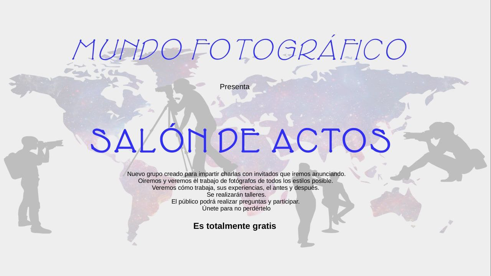

Ponencias en Telegram
Mundo_Fotográfico fue un grupo de Telegram que se creó antes de la pandemia. Actualmente, este grupo ya no existe, pero hay otro grupo con el mismo nombre que no tiene ni tuvo nada que ver con el proyecto que nos ocupa.
Con la llegada de la pandemia se empezó a generar una necesidad de comunicación para intentar establecer una normalidad aparente. Con el cierre de establecimientos y la prohibición de reuniones de personas, se creó el proyecto llamado Salón de actos, un grupo paralelo al de Mundo_Fotográfico...
Continuar